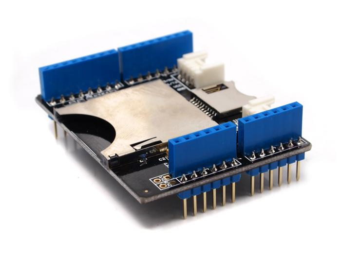
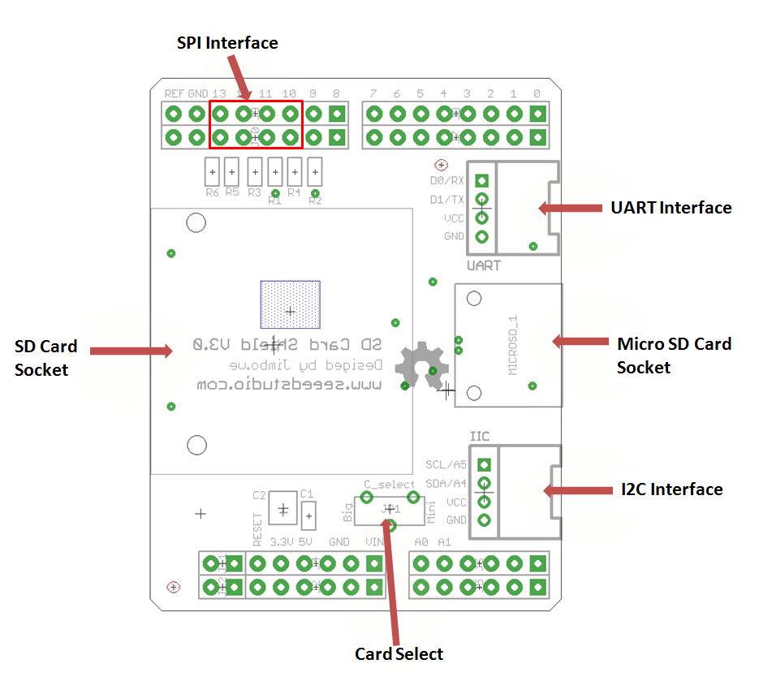
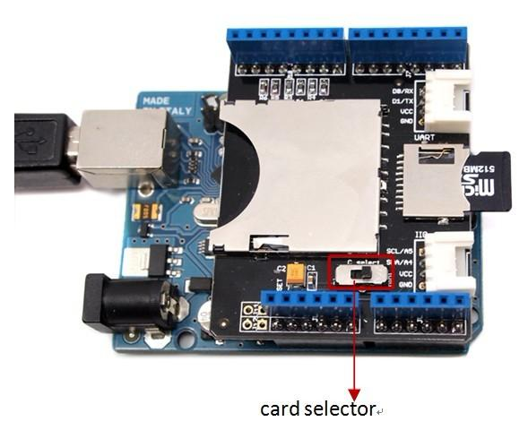
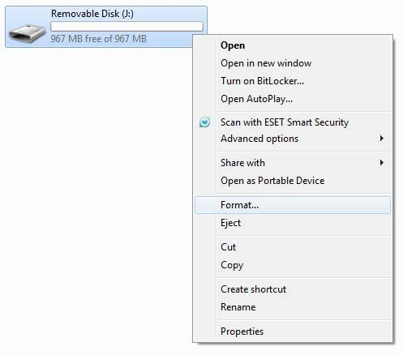
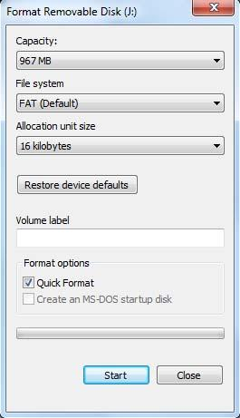

The SD card v3.0 shield adds storage to your Arduino project. It supports SD, SDHC, or MicroSD TF cards. Use the on-board toggle switch to select the SD card type. The card supports use of one and only one format of SD card, either SD/SDHC, or MicroSD. Before using an SD or MicroSD card, please set the shields "SELECT" switch to the proper setting: toward the SD/SDHC slot, or the MicroSD slot.
The SD Card shield v3.0 uses only the the SPI ports of Arduino. The shield is also stackable, so additional shields can go on top. There are Grove compatible sockets for the I2C and UART ports on board.
The SD Card shield v3.0 makes use of pin 10 as a chip select. Please be sure other stacked shields do not make use of that same pin. See v4.0 of this shield for a version that uses pin 4.
These next lines were user added: This shield works fine for the Arduino Mega 2560, you just have to make the appropriate connections. 4or10 ->53, 11->51, 12 ->50, and 13 ->52. This arrangement works fine so long as you make sure not to assign anything else to those pins.
Model: INT106D1P

| Item | Min | Typical | Max | Unit |
|---|---|---|---|---|
| Voltage | 2.7 | 3.3 | 3.6 | V |
| Current | 0.159 | 40 | 200 | mA |
| Supported Card Type | SD card(<=2G); Micro SD card(<=2G); SDHC card(<=16G) | / | ||
| Dimension | 57.15x44.70x19.00 | mm | ||
| Net Weight | 16.6 | g | ||

D10 – Used for CS of SPI
D11 – Used for MOSI of SPI
D12 – Used for MISO of SPI
D13 – Used for SCK of SPI
Grove connectors - One for Uart serial port, and the other one for I2C port.
Plug the SD Card Shield onto the Arduino; Insert your SD card into the socket and make sure the card selector pointing to the right way (Standard card or micro).And then connect the Arduino to PC with USB cable.
Warning: Don't insert SD card and microSD card into the shield at the same time.

First you have to get an SD card or micro SD card, and then format the SD card as FAT16 or FAT32 if it is necessary.
Format the SD card as the screenshots below:
 
| Revision | Descriptions | Release |
|---|---|---|
| v3.0 | V3.0 Release | 2012/3/29 |
| v3.1 | Voltage regulator upgraded to MIC5205 | 2012/5/10 |